Rendered from the Remotion project at 1920×1080. Each still is one key moment of a scene. Scenes with two moments show both.
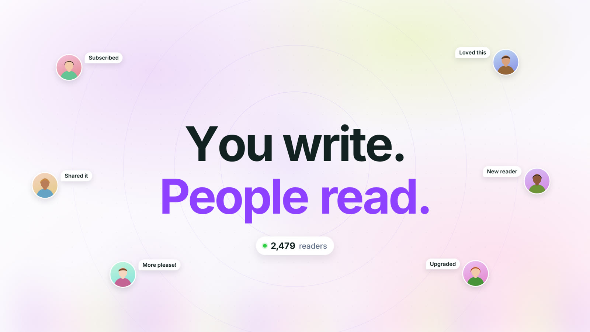
“You write. People read.” Typed with a cursor, a live reader counter, floating avatars with speech bubbles.
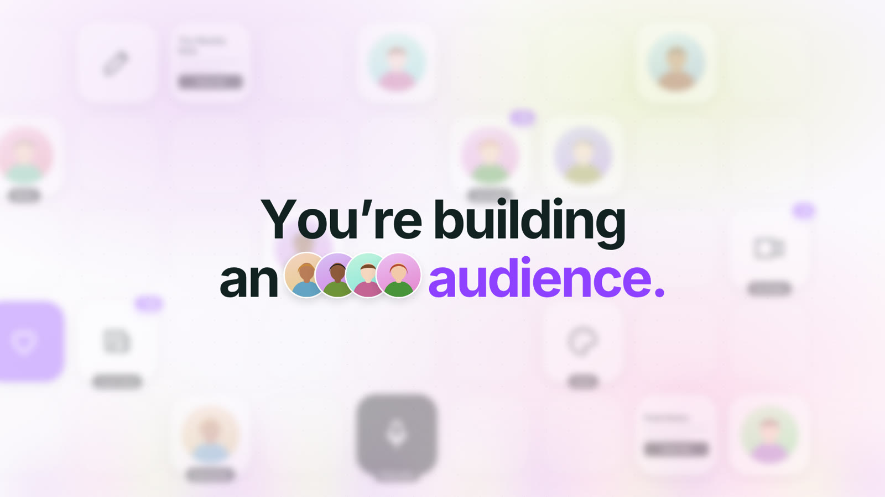
A grid of creator tiles blurs behind “You’re building an [faces] audience.”
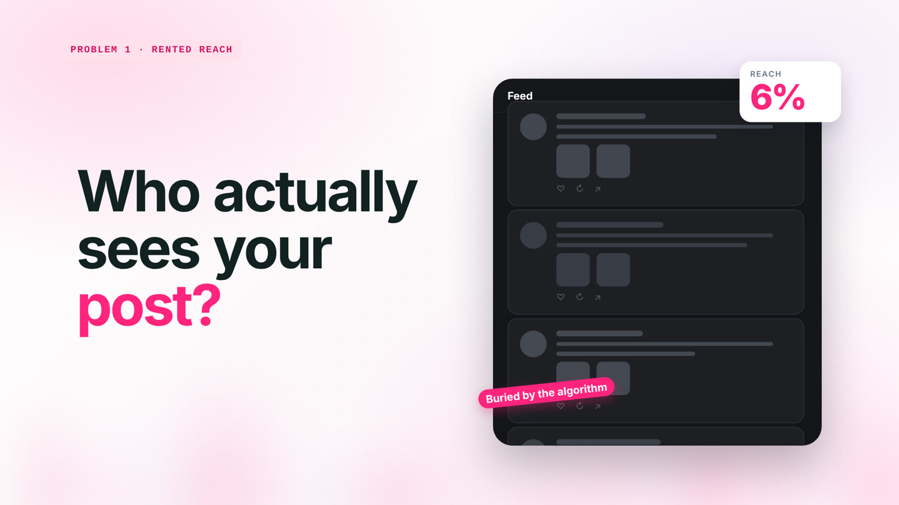
“Who actually sees your post?” A feed buries your post while the tilted Reach badge drops to 6%.
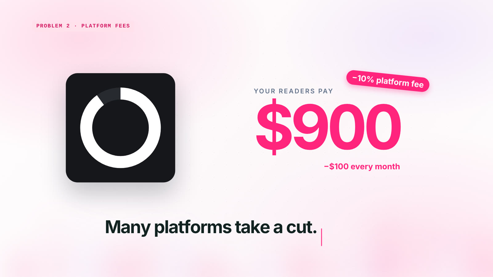
$1,000 rolls down to $900 as the 10% slice falls away. Line: “Many platforms take a cut. Forever.”
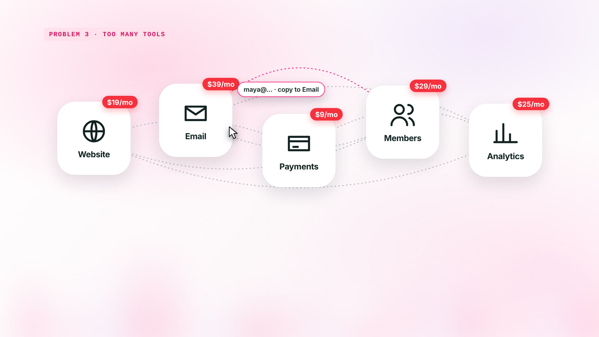
Five tool tiles with red price badges. The cursor drags a subscriber from Members to Email by hand.
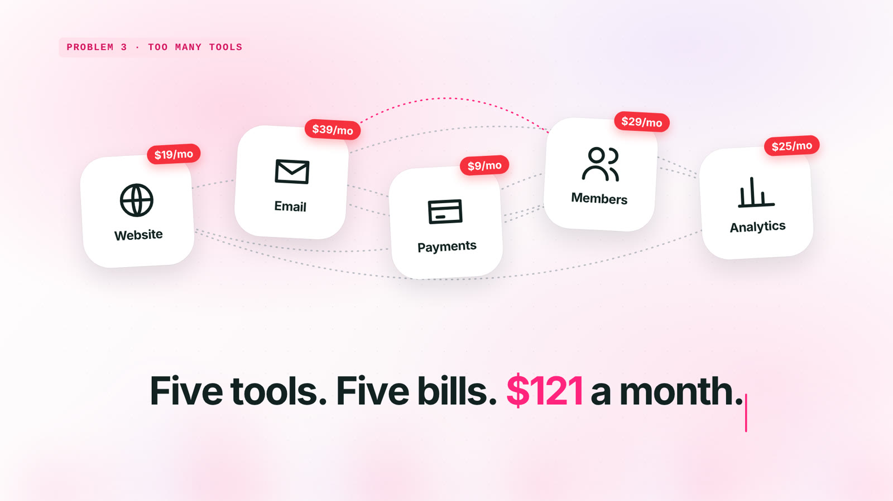
Tangled lines, the tiles jitter. “Five tools. Five bills. $121 a month.” Hard cut to black.
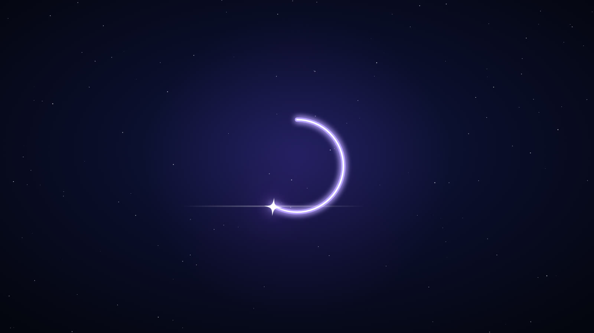
Navy starfield. A sparkle draws a glowing ring, which becomes the Ghost orb.
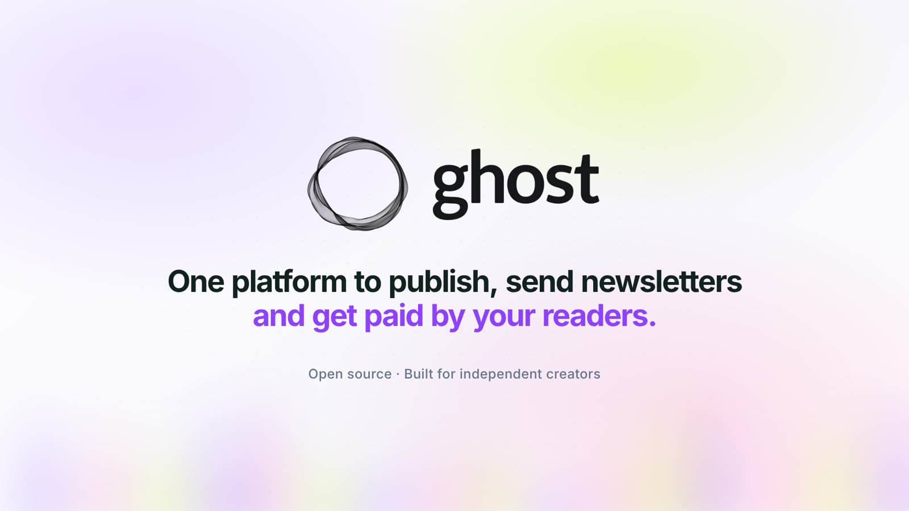
Flash to white. The Ghost logo types in, then the one-line definition of what Ghost is.
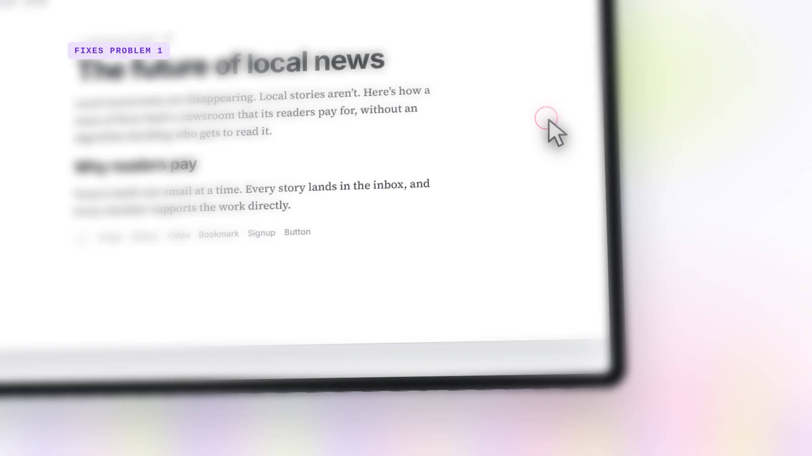
Ghost editor on a 3D laptop. The camera pushes into the Publish & send button with background blur.
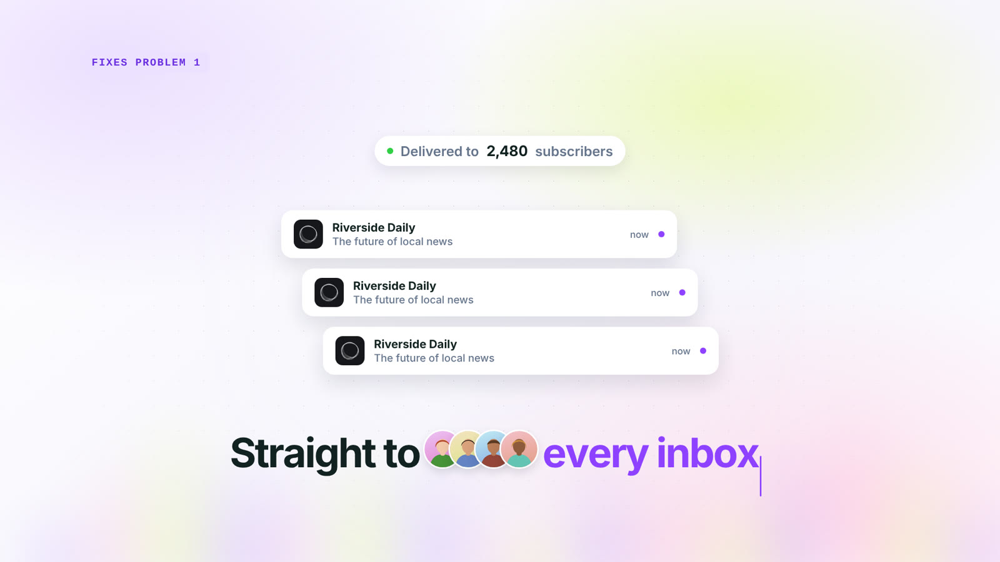
Fast blurred pan to inboxes. “Delivered to 2,480 subscribers”, then “Straight to [faces] every inbox.”
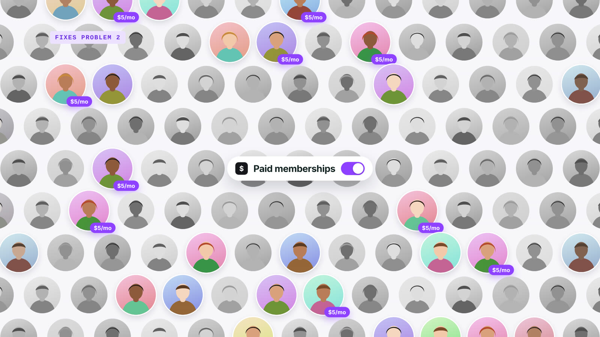
A wall of grey faces. The Paid memberships switch flips on, and readers turn to colour with $5/mo tags.
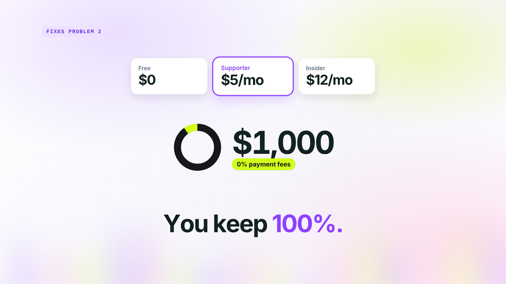
A circular wipe reveals the tiers. The slice snaps back to $1,000, with “0% payment fees” and “You keep 100%.”
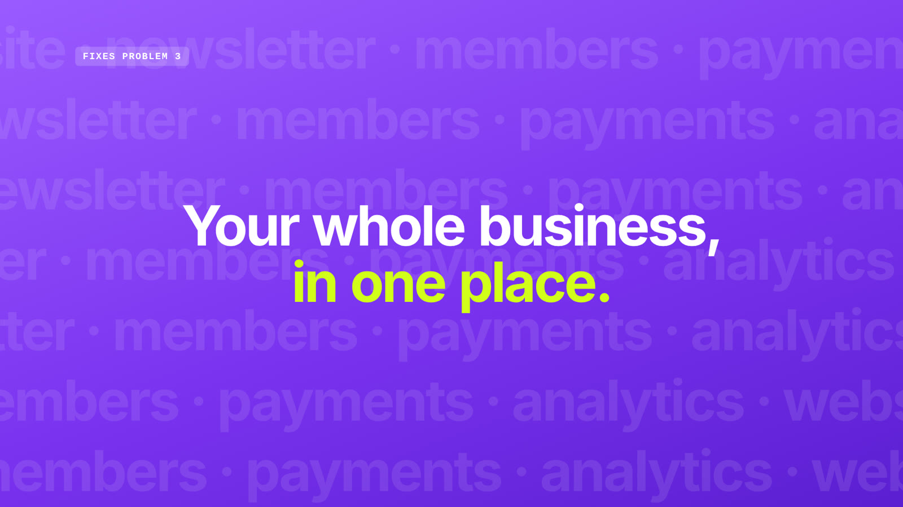
A purple wall of repeated words with “Your whole business, in one place.”
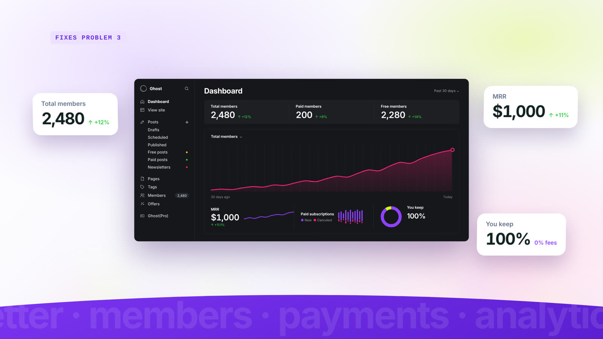
The wall sinks into a curved horizon. A white panel morphs into the Ghost dashboard, and stat cards float in 3D.
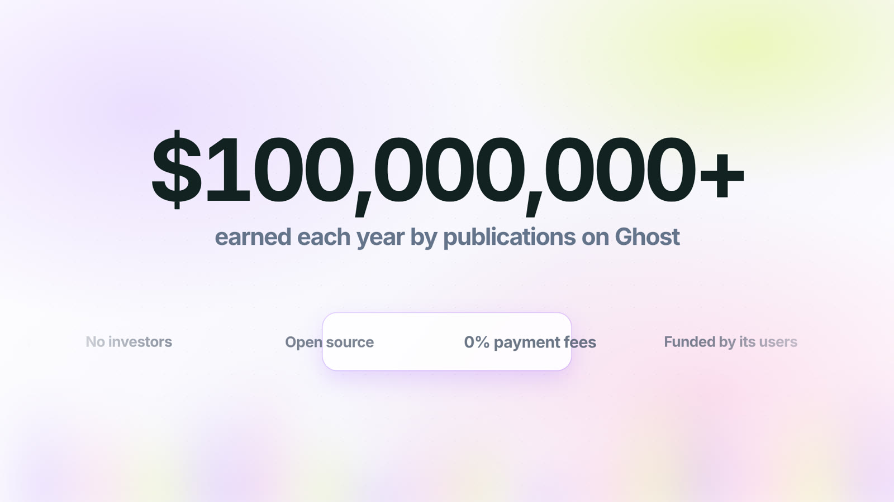
$100,000,000+ earned each year by publications on Ghost. Value chips slide through a highlighted strip.
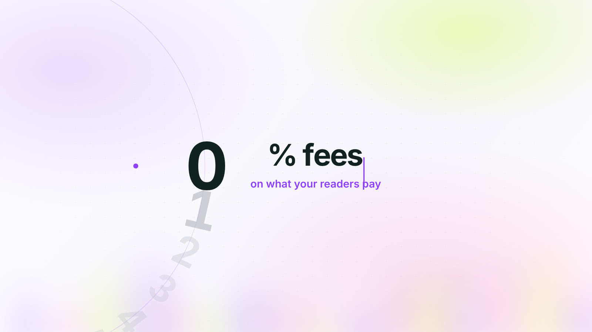
A number wheel turns from 10 to 0, then “% fees on what your readers pay”.
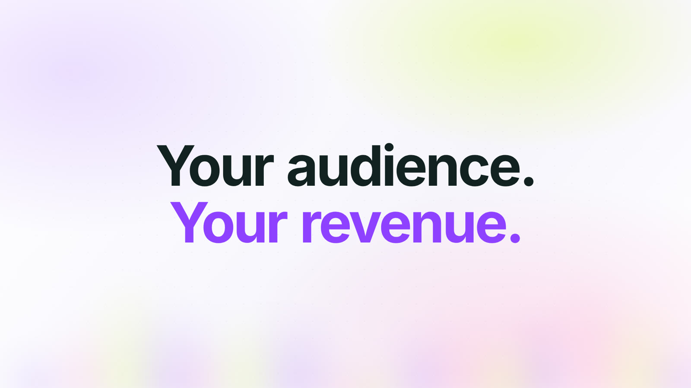
“Your audience. Your revenue.”
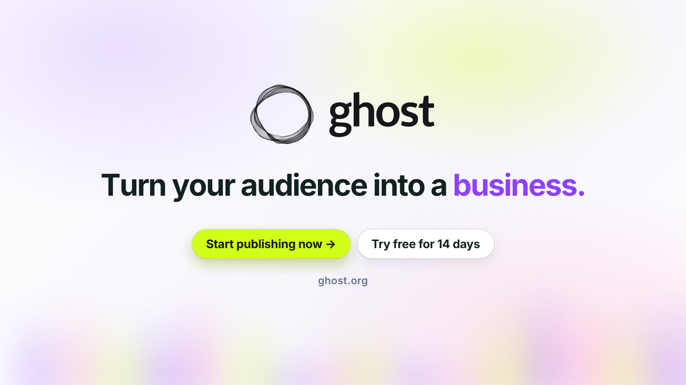
Ghost logo, “Turn your audience into a business.”, Start publishing now and Try free for 14 days, ghost.org.